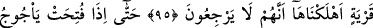

HEPSİ BİZE
DÖNECEKLERDİR.
92. Hakikaten bu, bir tek ümmet olarak sizin ümmetinizdir. Ben de sizin
Rabbinizim. Öyle ise bana kulluk edin.
93. (İnsanlar) kendi aralarında (din ve devlet) işlerinin birliğini bozdular. Halbuki
hepsi bize döneceklerdir.
94. Bu durumda her kim mümin olarak iyi davranışlar yaparsa onun çabasını
görmezlikten gelmek olmaz. Zira biz onu yazmaktayız.
95. Helâk ettiğimiz bir belde için artık (yeniden mâmur olmak) imkânsızdır;
çünkü onlar geri dönemeyeceklerdir.
96. Nihâyet Ye’cûc ve Me’cûc (sedleri) açıldığı ve onlar her tepeden akın ettiği
zaman;
97. Ve gerçek vaad (ölüm, kıyâmet) yaklaşınca, birden, inkâr edenlerin gözleri
donakalır! “Yazıklar olsun bize! Gerçekten biz, bu durumdan habersizmişiz; hatta
biz zalim kimselermişiz. (derler.)”
Ey insanlar! “Hakikaten bu” yâni tevhîd ve İslâm dini “bir tek ümmet olarak” yâni
ümmetleri ve asırları bakımından fürû‘ konularda birbirlerinden farklı olsalar da dînin
asıllarında (usûl) müttefik oldukları için peygamberler arasında esasta hiçbir ayrılık
olmadan; sınırlarını korumanız, haklarına riâyet etmeniz ve onlardan hiçbirini ihlâl
etmemeniz gereken “sizin ümmetinizdir.” Âyette tevhîd ve İslâm dinine “bu” diye işâret
edilmesi, sıhhat ve düzgünlük konusunda zuhûrunun kemâline dikkat çekmek içindir.
el-Kâmûs’ta şöyle der: “Ümmet, kendilerine peygamber gönderilen topluluktur.”
Aslında bir din etrafında toplanan kavimdir. Sonra bu kelimenin anlamı genişletilmiş ve
insanların üzerinde toplandıkları dine bu isim verilmiştir. “Kasdetti” anlamındaki “ ”